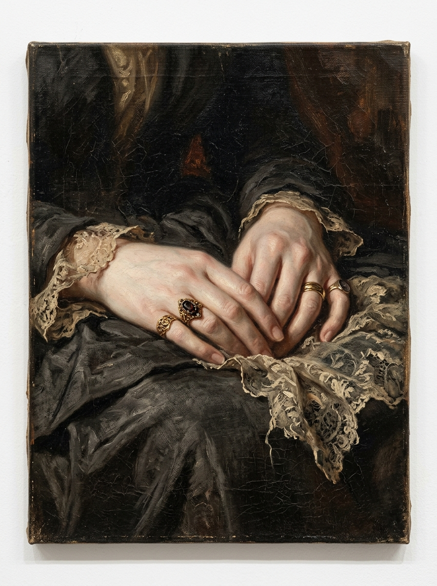
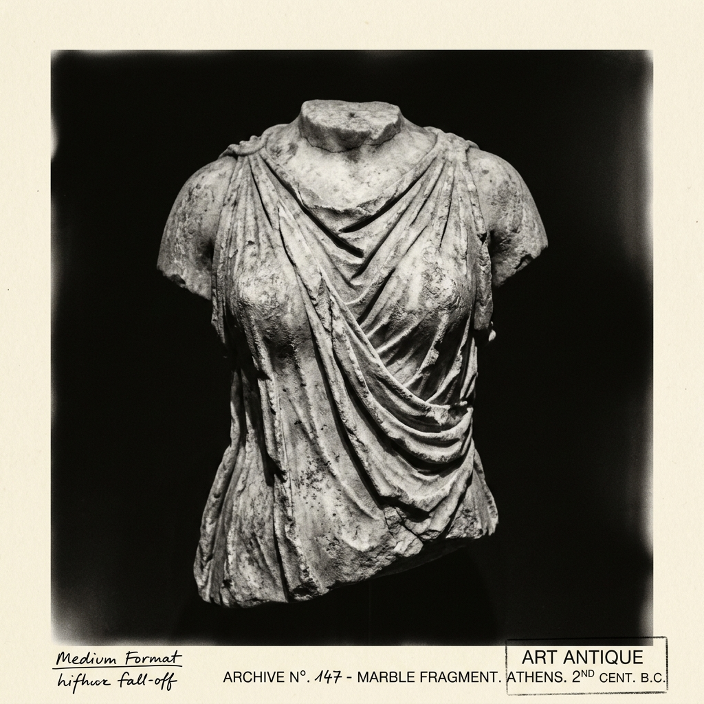
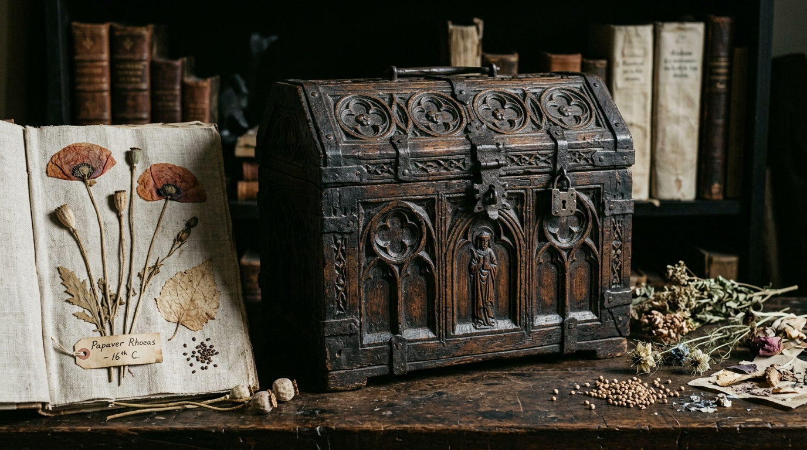
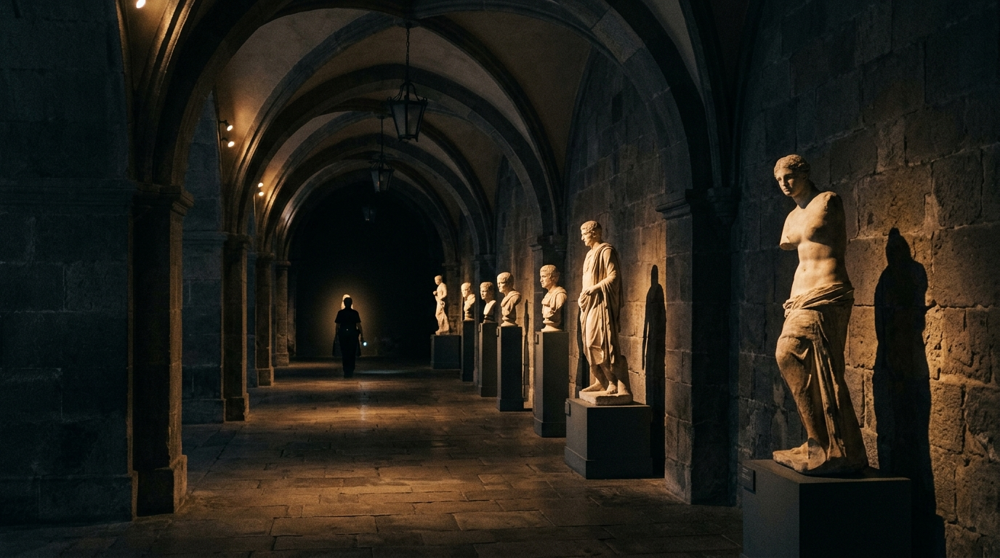

A MEMÓRIA DAS COISAS
Preservamos a matéria contra o esquecimento do tempo digital.
“Em uma época de saturação efêmera, o Museu Nocturne resguarda aquilo que não pode ser replicado em tela: a espessura do mármore gretado, o veludo puído pelas orações e a poeira mineral que sedimentou séculos. O objeto físico não é adorno do passado: é a única âncora tangível da memória.”
O RIGOR DO ARQUIVO
01
Quarentena Anóxica em Nitrogênio
Cada peça recebida permanece 21 dias em câmara desoxigenada (oxigênio residual inferior a 0,1%). Neutralizamos qualquer agente xilófago ou microbiano sem recorrer a biocidas químicos que alterem a matéria original.
02
Penumbra Estabilizada & 48% UR
As salas subterrâneas operam sob iluminação direcional fria desprovida de radiação UV/IR. O microclima higroscópico é balanceado passivamente em 48% ± 2% de umidade relativa, resguardando tintas e ligantes minerais.
03
Laudos Físico-Químicos Abertos
Rejeitamos o mistério obscurantista: cada obra possui espectrografia Raman, fotografia ultravioleta em luz rasante e histórico de estabilização catalogado em dossiê de acesso aberto para pesquisadores.
A MEMÓRIA DAS COISAS

PROCEDÊNCIA: ROMA
GRAU PÁTINA: MINERAL IV
DIMENSÕES: 38×24 CM
RESTAURADO 2024
Objetos que retêm os vestígios das mãos, dos rituais e dos silêncios que os atravessaram.
A exposição A Memória das Coisas reúne fragmentos de mármore, têxteis litúrgicos com fios de ouro, caixas relicárias e herbários dos séculos XVI a XIX conservados sob rigorosa penumbra.
Ao contrário do museu enciclopédico tradicional que busca purificar a matéria de seu tempo, o Museu Nocturne expõe a matéria viva com suas fissuras, oxidações e pátinas — compreendendo que cada objeto físico funciona como um receptáculo denso de memória imaterial.
CURADORIA:
HELENA MOREIRA
SALAS DE EXPOSIÇÃO:
SALAS 04 + 05 (PISO SUPERIOR)
PERÍODO:
23 SET 2026 — 14 FEV 2027
ACESSO:
MEDIANTE HORÁRIO MARCADO (MÁX. 25 VISITANTES/SESSÃO)
SELECIONADOS
DO ACERVO

Relicário em Seda & Fios de Ouro
“Fibras de seda selvagem tingidas com fuligem e fiação de ouro 22k confeccionadas em convento bracarense.”

Torso & Fragmento de Mármore

Cofre Relicário & Herbário Seco
“Madeira de carvalho envelhecida, dobradiças em ferro forjado e vestígios botânicos de papoula, sálvia e linho sacro. Inscrição litúrgica gravada na face interna da tampa com pigmento mineral ocre.”
AUTORIDADE ARQUIVÍSTICA
039
FUNDADO EM 1987 / PORTO ALEGRE
482
MÁRMORES, TÊXTEIS & HERBÁRIOS
100%
ESTABILIDADE TÉRMICA PERMANENTE
014
MOSTEIROS & ARQUIVOS EUROPEUS
“O Museu Nocturne trata a degradação não como perda ou ruína, mas como a mais pura caligrafia do tempo gravada na matéria dos homens.”
“Uma experiência de silêncio, penumbra e rigor mineral absolutamente ímpar na América Latina. Entrar no arquivo equivale a respirar séculos guardados.”
“TODO OBJETO GUARDA UMA MÃO.”
“No Museu Nocturne, a quebra de um mármore e o desgaste do linho não são desastres: são as inscrições silenciosas da experiência humana gravadas na matéria.”
PRÓXIMAS
EXPOSIÇÕES
035
Memória Botânica
036
O Peso da Luz
037
Fragmentos do Lar

MÉTODO DE CONSERVAÇÃO
01
Investigação de Procedência
Exame paleográfico e físico-químico dos documentos de custódia. Rastreamento da linhagem do artefato e mapeamento de intervenções anteriores.
02
Quarentena Anóxica Selada
Confinamento estéril em câmara com atmosfera 99,8% de nitrogênio gasoso. Cessação imediata de atividade biológica sem contato com venenos ou solventes.
03
Laudo Mineral & Espectroscopia
Leitura por luz rasante ultravioleta e espectrometria óptica para identificação de pigmentos, aglutinantes de resina damar e pátinas de calcita.
04
Exposição em Penumbra ou Guarda
Transferência para as galerias subterrâneas climatizadas a 45 lux ou acondicionamento em gavetas de cedro desacidificado na Reserva Técnica.

SALA DOS ARCOS / ARQUIVO SUBTERRÂNEO — ILUMINAÇÃO RESTRITA A 45 LUX
PRAÇA DAS ARTES, 34 / PORTO ALEGRE / BR
VISITE O
MUSEU NOCTURNE
TERÇA A DOMINGO:
10:00 — 18:00
QUINTA-FEIRA (NOTURNO):
10:00 — 21:00
SEGUNDAS-FEIRAS:
FECHADO (CONSERVAÇÃO PREVENTIVA)
Condições de Iluminação & Conservação
“A visitação às galerias subterrâneas e salas de reserva exige preservação do silêncio e proibição absoluta de flash ou emissões luminosas. Os objetos respiram sob a mesma quietude há séculos.”
REGISTRO TÉCNICO DAS OBRAS
✣ FILTRO ATIVO
| REGISTRO | DATAÇÃO | TÍTULO & MATÉRIA | ESTADO | CONSULTA |
|---|---|---|---|---|
| MNT-017 | c. 1894 | Estudo Sem Título (Mãos em Prece) Óleo sobre linho cru escurecido | ESTÁVEL (MICROCLIMA) | |
| MNT-028 | c. 1770 | Relicário em Seda & Fios de Ouro Madeira de nogueira, veludo puído e fios de ouro 22k | FRÁGIL EXTREMO | |
| MNT-041 | c. 1820 | Torso & Fragmento de Mármore Mármore carrarense com fissuras e pátina mineral | FISSURA ESTABILIZADA | |
| MNT-052 | c. 1540 | Cofre Relicário & Herbário Seco Carvalho, ferro forjado, pergaminho e sementes secas | ANÓXIA COMPLETA | |
| MNT-034 | 2026 | A Memória das Coisas (Matriz Iconográfica) Fotografia analógica 35mm, joalheria, renda e cera | EXPOSIÇÃO ATUAL |
ADMISSÃO AO ARQUIVO
TERÇA A DOMINGO
Acesso Geral à Exposição 034
R$ 40 / R$ 20 (MEIA)
Entrada individual para as Galerias 04 e 05 sob iluminação penumbral. Inclui ensaio sonoro curatorial e livreto de catalogação impresso em papel de algodão.
- ◆ Permanência estimada: 90 minutos
- ◆ Livreto monográfico incluso
- ◆ Acesso a todas as 34 obras do núcleo
QUINTA-FEIRA 19:00
Visita Noturna Curatorial
R$ 65 / VAGAS LIMITADAS
Percurso guiado pessoalmente pela curadora Helena Moreira. Acesso pontual à antecâmara da Reserva Técnica e audição de leituras de códices sob luz de velas de cera mineral.
- ◆ Lotação máxima estrita: 25 visitantes
- ◆ Diálogo técnico com a equipe de conservação
- ◆ Exemplar assinado do catálogo 034
SEGUNDAS-FEIRAS
Credencial de Pesquisador
GRATUITO / SOB HOMOLOGAÇÃO
Destinado a historiadores, restauradores e acadêmicos. Consulta física a laudos de espectrografia, gavetas de pergaminhos e registros de tombo desde 1987.
- ◆ Exame em mesa limpa com luvas de algodão
- ◆ Acesso a códices fora de exposição
- ◆ Requer submissão de projeto prévio
PERGUNTAS FREQUENTES
A luz é o principal agente acelerador de degradação fotoquímica em fibras de linho, seda e pigmentos minerais de séculos passados. Mantemos todas as salas com iluminação restrita a $\le$ 50 Lux e filtros ultravioleta 100% para que as peças possam ser apreciadas sem desbotamento estrutural. Os olhos dos visitantes levam cerca de 3 a 5 minutos para se habituar à penumbra, revelando detalhes que a luz excessiva oculta.
Fotografias sem flash e sem luz auxiliar são autorizadas exclusivamente com aparelhos manuais em modo silencioso. O uso de flash, tripés, bastões de selfie ou iluminação de suporte é estritamente proibido por motivos de conservação e respeito à experiência imersiva dos demais visitantes. Para ensaios documentais ou de imprensa, o agendamento prévio com a assessoria é obrigatório.
A respiração e o calor metabólico de grupos numerosos provocam oscilações drásticas nos índices de umidade relativa (estabilizada rigorosamente em 48%) e na temperatura (19°C) das salas subterrâneas. O teto de 25 pessoas por sessão resguarda a estabilidade física do microclima e garante o silêncio necessário para uma relação íntima com cada artefato.
Pesquisadores vinculados a instituições acadêmicas, museus ou ateliês de restauro podem solicitar a Credencial de Pesquisa enviando síntese do projeto acadêmico e justificativa de consulta. As visitas à Reserva Técnica ocorrem exclusivamente às segundas-feiras (com o museu fechado ao público geral) sob supervisão direta do laboratório de conservação.
PRONTO PARA ENTRAR NO ARQUIVO?
“O silêncio do arquivo espera por você. Reserve sua sessão e experimente o peso tangível de objetos que guardam a temperatura de mãos humanas há séculos.”